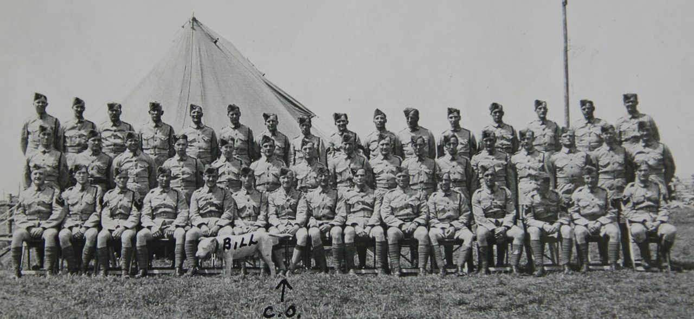
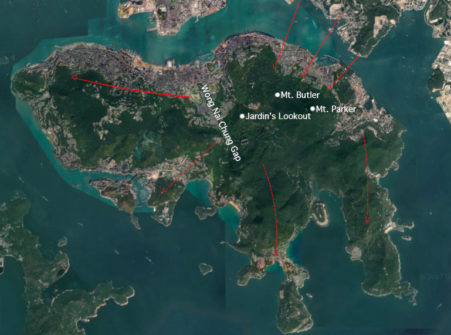
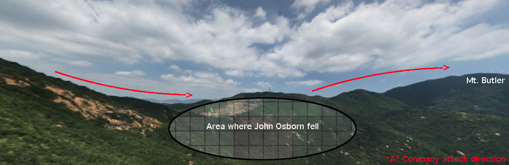
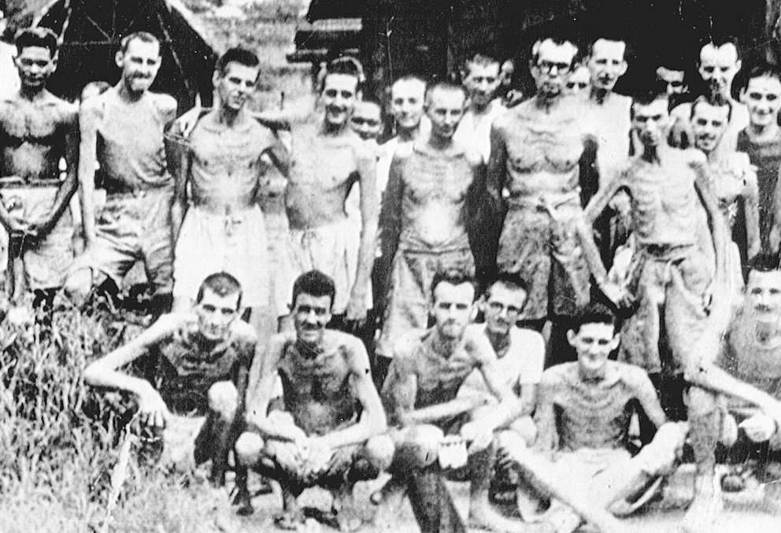
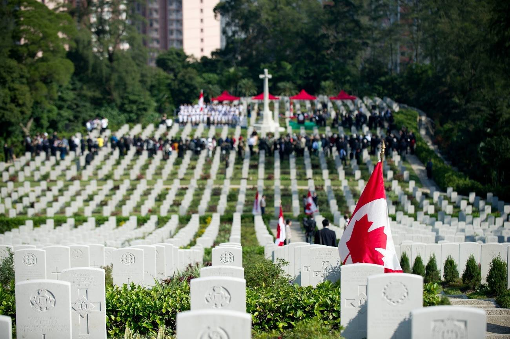

Introduction
I find it increasingly rare that people around my age actually have an interest in world history and or past conflicts. The most important historical events were glanced over in elementary and high school, but all I can remember is the majority of classmates finding ways to disengage from the teacher and pray that time magically advanced to lunch break. Then there was me; the kid who eagerly waited for the week the unit on Alexander started so I could ask why his cavalry charge at Gaugamela was so effective? Or, to hoping that the second World War unit gave me the answers about the German miscommunication in the Falaise Pocket. What I did not understand at the time was that these educators did not have the answers I was looking for. Unfortunately, I quickly realized that questions with such specific and minute details would never be covered in grade school. I had to start looking deeper, into the troves of historical archives and books if I wanted to completely understand the why and the how of certain events. That stuff was, and still is my jam to this day. War, conflict, tactics and other closely related topics strike a huge chord with me. While I don’t have a concrete roadmap as to how this developed — younger years of playing ‘army’ with the neighbourhood guys certainly helped — I can say that a large piece of it comes from understanding that the ultimate human sacrifice is directly connected with these themes. Many people forget that the most costly transaction is not anything involving materialistic items or even currency, but the one involving human lives for freedom; human lives for democracy. Unfortunately, our own nation knows this all too well. I strongly believe each Canadian needs to familiarise themselves with the basic history of the country and especially the cost at which was given, and is still given, for future generations to live here in peace. When I look at the Canadian flag, I see the soldiers who died at Vimy Ridge, on the beaches of Normandy and Dieppe, at Ortona, in Afghanistan and Korea, and every battle in between. That’s the cost to see that flag still waving; and, to me, that is extremely powerful and humbling. With that said, today is about an often forgotten story of the brave Canadians who faced extreme odds in the Battle for Hong Kong some 77 years ago.
Key background information
Japan began taking aggressive military action long before the official start of the second World War with the invasion of Manchuria in 1931 and the re-ignition of the Sino-Japanese (Chinese) conflict in 1937. With the economic downturn of the early 1930s and heavy reliance on importing materials, the occupation of the surrounding regions, namely the Dutch East Indies, provided key strategic opportunities for the empire (Barnhartt, 1988). By cutting off the Burma road they could cripple China’s war effort and further invasion of South East Asia enabled use of key petroleum and rubber plants much needed for the war effort (Barnhart, 1988). Additionally, constructing a daunting defensive perimeter potentially posed too high a cost for the Allies – succumbing to Japanese terms in the future.
April 13th, 1941 — Japan and the Soviet Union sign a treaty of neutrality.¹ This event is an overlooked action in the course of World War II as the occupation of Manchuria meant that Japan had the potential to strike an unexpected and significant blow to the Soviet Union. When Hitler invaded Russia later that summer, the German high command were begging that the Imperial Japanese disregard this pact and invade on the Eastern side to potentially crush and remove the Soviets from the war. They however, stayed true to their word and “honored [this pact] to the very last despite subsequent German exhortations that she disregard it (Shirer, 1960).” This was key for Japan to prograde out into the South Pacific unopposed.
The Events
I try to visualise the second World War as a war game board with pieces distributed everywhere because it’s easier to break down the major theatres that way. Despite this, it is almost inconceivable to understand the web of logistics and resulting fluidity of human movement since numerous nations were acting concurrently across a massive spatial scale. For the British, protecting the exterior of the empire was somewhat of an afterthought due to the looming threat the Germans posed in France; case and point, Hong Kong. The British parliament understood that if war with Japan was to come, Hong Kong could not hold indefinitely, but they decided to bolster the garrison — which aided in politcal relations with China — and called upon Canadians to help. Beside a handful of British, Hong Kong, Chinese and Indian units, our Winnipeg Grenadiers and Royal Rifles of Canada battalions (1975 untested, barely trained and mainly young soldiers) made the journey.

Arriving on November 16th with no war in the foreseeable future, the Canadians got to indulge in the luxuries that the city had to offer for a little over three weeks. It seemed like a vacation as the total Hong Kong garrison now numbered some 14,000 men and the British were confident that their lengthy (18km) mainland defence line — the Gin Drinker’s Line — of pillboxes and concrete bunkers, would fend off assaults for at least a week. Unbeknownst to them, that was about to change as some 60,000 battle-hardened Japanese soldiers soon mobilized and took up positions just north of the border. On the morning of December 8th (their time), Japan attacked all across the South Pacific and thrust a force of 20,000 soldiers directly at Hong Kong. Under the cover of darkness, they had massive success against the thinly defended Gin Drinker’s Line. Despite strong efforts, it fell in mere hours and this failure led to a full scale retreat from the mainland city of Kowloon to Hong Kong island by thousands of civilians and soldiers. By December 13th, the Japanese had full control of the mainland and continuously shelled the now isolated garrison on the island for six days.

From here and other surrounding peaks (Figure 2), they could observe the coastline and fixate their guns downslope as they prepared for the looming invasion. On the night of December 18th, the Japanese made a daring and successful crossing (the area was filled with smoke due to the prior bombardments) of the channel, which took the defenders by total surprise.It was imperative for the Japanese to move quickly up the peaks and overwhelm the Canadians to gain these strategic points. The goal was to occupy the Wong Nai Chung Gap and divide the island in two (Figure 3). This they did very well and the Canadians took many casualties as they attempted to mount small group counter-attacks trying to push the Japanese back. The first phase of the Japanese invasion had gone incredibly well and it forced the Canadians into total chaos. With their primary positions overrun, they had no more communication lines and had no idea where the bulk of the Japanese were coming from. Jardin’s Lookout seen in Figure 1, which was a tertiary line of defence, was already coming under attack before the Canadians could even realize what was going on.
The plan of action for the Canadians on the 19th of December was to send “A” Company (100-200 men), led by Sergeant Major John Osborn, overtop Jardin’s lookout and drive forward to retake Mt. Butler. With heavy casualties, this was achieved until the Japanese counter-attacked later in the day. As “A” Company retreated they become split up, overwhelmed, and surrounded. Throwing back numerous grenades from their defensive positions along the slopes, one landed near John and he realized he didn’t have time to throw it back so he warned his comrades and threw himself on the grenade, ultimately sacrificing himself. The remainder of “A” Company eventually surrendered and became Japanese prisoners of war until their release in 1945. The 42-year-old Osborn was awarded the first Victoria Cross — the highest honour a Canadian soldier can receive — in the second World War for exceptional bravery. A true hero.

That same day, the Canadians lost their commanding officer, Brigadier John Lawson, when his command post came under fire.² Despite this, a portion of the Winnipeg Grenadiers held a critical section of the Wong Nai Chung Gap for another three days against all odds. Every single man was wounded, no reinforcements were available and they were surrounded on all sides; they finally surrendered on December 22nd. Intense fighting continued until the western portion of the island fell on December 24th and on Christmas Day 1941, the British surrendered Hong Kong. For almost 18 days the Canadians fought with the Commonwealth bitterly resisting the Japanese and it cost 290 lives along with 493 wounded. The casualty rate for the units at Hong Kong was one of the highest in the second World War for the Canadian Army, which reinforces how fierce the fighting was. Some 264 Canadians ended up dying later on as Japanese prisoners of war (POWs) due to the horrific conditions in their work camps; many of the surviving soldiers held strong bitterness towards the Japanese and how they operated.³ For example, when the Japanese arrived at a medical hospital located on the southern part of Hong Kong island, they bayonetted every wounded soldier and mutilated some of the bodies.


I cannot even begin to imagine the experiences these soldiers went through, who for the most part, were younger than myself. To arrive on foreign land and fight for your life in complete chaos against a superior Japanese force is absolutely bone-chilling. Survival ensured four years of captivity before stepping foot on Canadian soil again. It was a costly task, but their answering to the call of duty was remarkable. Additionally, their sacrifice and bravery should never be forgotten. Lastly, I want to acknowledge and thank the History Channel’s For King and Country series since the majority of this writing heavily relied on it.
For now,
MGW
¹ These two nations were just recently at war from 1904-1905 over Manchuria and Korea so this was a step forward in relations.
² He was the highest ranking Canadian soldier killed in action during the second World War.
³ The Japanese were ruthlessly inhumane towards prisoners, many thought it was better to die than to be captured. Ultimately, it took until 2011 for the Japanese government to formally apologize to Canada for the treatment of Hong Kong POWs.
Literature cited
Barnhart, M. A. (1988). Japan Prepares for Total War. Cornell.
Shirer, W. L. (2011). The Rise and Fall of the Third Reich. (15th anniversary ed.). Simon & Schuster.
Yeandle31 History Channel. (2019, January 29). For King & Country: Episode 2 - Disaster in Hong Kong [Video]. YouTube. https://youtu.be/yDedCWEp51o